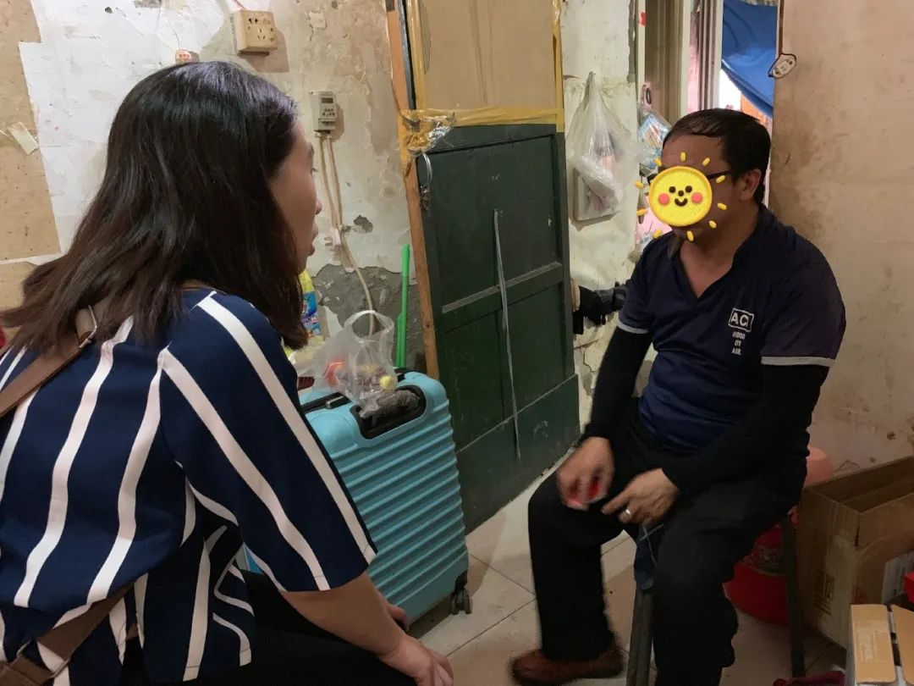
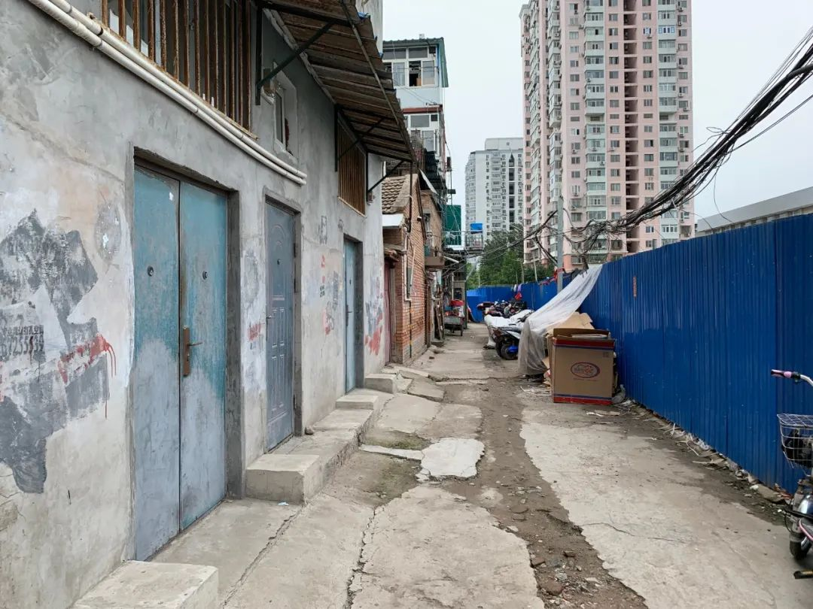
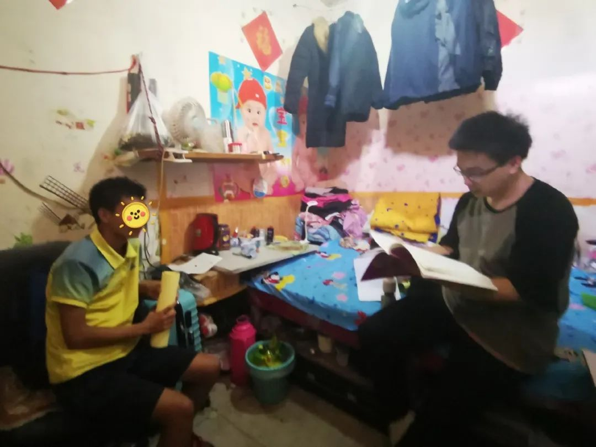
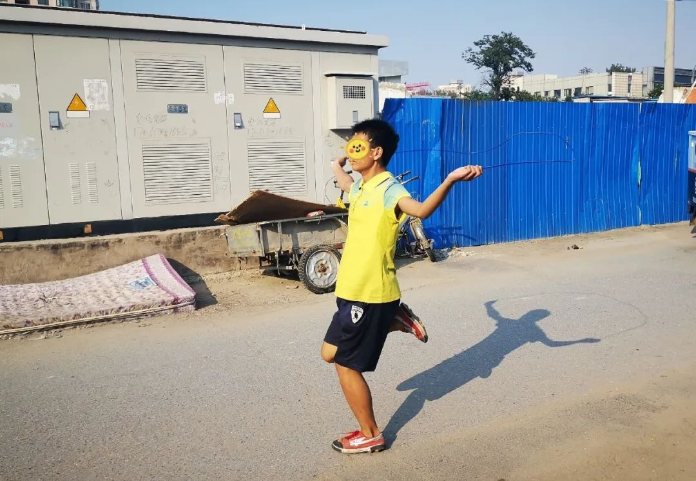

监控：口罩概念股搜于特十天八涨停，董事长亲属借机套现
原文链接 备份链接 搜于特现主营业务为品牌服饰运营和供应链管理。其近期股价上涨和公司公告拟投产生产口罩相关。然而公告发布近1个月后，公司相关产品仍未投产。同时，在公司股价上涨后，公司股东则开始减持 文 |《财经》记者 杨秀红 张建锋 编 …
不上班就得吃老本，我们没钱吃啥老本
口述者：刘兴（化名）
打工所在地：北京
编者注：刘兴，51岁，1988年从内蒙农村来京打工，右眼失明，左眼白内障，因手术风险较大无法做手术。现在做车管员工作。妻子36岁，智力二级残疾，无业在家。儿子16岁，读初中三年级，平时内向少言，对自己的未来充满迷茫。
我初中毕业，学历不高。1988年，我跟着一个在北京当兵的表叔来北京打工。刚来的时候没有地方住，我就在北京站住，被警察抓住给送过几次收容所。这些年，我从事过各种工作，近年来视力越来越不好，好多工作干不了。
马善被人骑，人善有人欺
2017年大兴大火之后，我们搬到了木樨园，跟这边人不和。这边人欺生，我平时上班不在家，邻居觉得我家没人，老实巴交的，反正就是马善有人骑，人善有人欺。有两回险些有冲突，然后就跟他们解释，咱们都是来北京打工的，相识就是缘分。他们说“谁跟你是缘分啊！”
我跟房东也说过他们欺负我们的事，我们在院里洗的衣服晾在门口就找不着了，还有一次我的自行车放在外边被弄上屎、手纸什么的。这院里一共四家，都是亲戚。房东说：“现在住的房子已经换了好几家了，就是因为跟这几家不和。他们住这个院子里十多年了，不愿意让别人在这住。”后来他们看我们挨欺负也认，也不言语，就拉倒了，现在关系处的还行。

▲ 协作者社会工作者到刘兴家里探望（拍摄于2019年暑期）
一个月下来几乎不剩钱
我现在做车管员， 一个月3000块钱，我眼睛不好，看东西模糊。2019年夏天，领导让我休息了一个多月，说白了就是不想要我，也没给我发工资。后来我又找了领班，说家里不容易，才又让我上了。孩子学费五六千元，得跟朋友、亲戚借钱，还得跟学校说好话，过一段时间再交。每次都是等我上班攒两三个月才能把借的学费钱还清，但是没多久又得交下学期的学费了，总是这样倒不过来。
目前我们房租水电一个月1000元，孩子学校离家得有40里地，坐公交上学100多元/月，早饭200元/月，一个月下来几乎不剩钱。今年过年就给孩子买双棉鞋，我们俩什么衣服都没买，能凑合穿就行。
孩子妈妈有二级智力障碍残疾证，前年开始发钱补贴，每月300元，听说老家有人已经收到了八九百元，在北京我们也没法证实。她老说头疼，每个月得买药，医生说她是神经性头疼，智力障碍对大脑有影响。她应该经常吃药，但是太贵了，根据我们的经济情况，要是有钱就买点，没钱就不买。我们有新农合，但只能报50%，以前就报过一回，半年之后才能报下来。因为你本人不在家，他就不愿意给报，你还得老催他，老是一拖再拖的，而且我们在北京买药也不能报销。我问过村长和支部书记，他们认为只要你有能力出去打工，村里就认为你有生活能力，不给你算低保。花的药钱没算过，就是每月手里都不剩下钱了。
我这眼睛右眼是失明的，还有一只也高度近视。2019年9月份的时候，忽然看东西感觉下雾似的。去医院检查说是白内障，专家说做手术的话风险太大，因为只有一只眼睛有视力了，做完这只，如果看不见就完了。后面也就没有做手术，我现在看东西就感觉眼前有哈气似的，上班看着前面的自行车是否放在那儿都看不清。2017年搬家后上班更远，每趟公交车间隔一小时，为了追公交车，我跟着别人跑，眼睛不好使撞到路边铁管上了，牙撞活动了，一年才缓过来。
不出门，我就有两个以前买的保暖口罩
大年初一领导就说让我休息不上班了，啥时候上也不知道。社区从1月29号开始贴墙上通知了，让戴口罩，不让到处转悠，胡同里也有保安站岗，问你是哪儿的，有身份证吗？这周围人都变少了。我们胡同门口有片空地堆着垃圾啥的，已经被人拿铁板挡上了，也没看到有人喷消毒液。

▲ 刘兴租住的出租房的门口（拍摄于2019年暑期）
我看手机新闻说，它这个病（新冠肺炎）都是通过呼吸、唾沫啥的传播，反正都注意点呗。现在周围人出来的很少了，都是戴口罩。现在人也不到处串了。我们附近没听说有隔离的，我就是看手机新闻知道的防护措施，出门戴口罩、勤洗手、尽量少接触人，别到人多的地方去。
我自己有两个以前买的保暖的口罩，也很少跟人接触。等我上班了再考虑买那种专用的口罩吧，我告诉孩子和他妈妈在家待着别出门，能不出尽量不出。
现在这个病挺厉害的，上班时间也老是延长，一会说是初七，现在又说是初十，又说根据疫情发展再通知。我们这个个体单位也不像是国有的，不上班就没钱。这也不是着急的事，得把心态摆好，不要紧张，注意身体。
不上班了就得吃老本，我们没钱吃啥老本啊
这个疫情持续的时间长短不好说，观察一天是一天吧。不上班了就得吃老本，但我们没钱吃啥老本。疫情来的突然，一开始忽略了，现在才开始紧抓，我担心不上班没工资，没钱交学费。
我也想过如果这里一直不让回去上班，就找其他工作。但是现在还不能找，因为他还没说不要我，我们这个车管员的工作，说白了不是歪瓜裂枣就是病病殃殃，身体好的人没人干这个活。现在这个疫情即使多方打听找到活，也不能去上班，只能先了解信息。我眼睛也不好，好多活我想干，人家还不要我。
没交上学费，老师就不让进教室
孩子学校的微信群从1月23号到现在，让每个学生天天报一次平安。但啥时候上学老是说得等通知，网课啥的老师还没提过。

▲ 陪伴天使到家里陪伴刘兴的孩子（拍摄于2019年9月）
老是不能去上班的话，孩子的学费我比较犯愁。之前有一次学费差一千块钱没交上，老师就不让孩子进教室，4天没进教室，后来跟别人借钱交上了才让进。我想等孩子今年初中毕业后上大连读个职高去，那里有亲戚能照顾他。我要是在北京实在混不下去了就跟他妈妈回老家。

▲ 陪伴天使到家里陪伴刘兴的孩子（拍摄于2019年9月）
我跟孩子总说，要是想留在城里就得好好学习，才能找到好工作。打工跟找正式工作是两码事。要是正式工作的话，一天工作八小时，上班时间少，工资待遇还高，受法律保护，各方面都好。临时工的话，说辞掉你就辞掉，你干到80岁、100岁都可能没有退休金。以前我总想着等他上班了，我就带着她妈妈再去找个工作，将来攒点钱给孩子成个家，现在看我这个身体也不行，也挣不了几个钱，将来只能靠孩子自己了。
原文链接 备份链接 搜于特现主营业务为品牌服饰运营和供应链管理。其近期股价上涨和公司公告拟投产生产口罩相关。然而公告发布近1个月后，公司相关产品仍未投产。同时，在公司股价上涨后，公司股东则开始减持 文 |《财经》记者 杨秀红 张建锋 编 …
原文链接 备份链接 本文是协作者在“农民工抗疫救援行动”中，针对困境农民工家庭开展的个案访谈之一，旨在快速识别疫情中的脆弱人群及其需求，为疫情防控和救援工作提供参考，我们整理出来与你分享。 疫情下的深呼吸 ——困境农民工家庭个案实录（七） …
原文链接 备份链接 签收之后，我把箱子拿回家，拆出一个口罩一看，傻了眼——口罩是近乎透明的，接了水之后，滴答滴答往下漏水，再看包装，上面没有任何厂家信息，合格证都没有一张。 配图 | Sipa图片社 人间骗局丨连载53 今年年初，我回到 …
原文链接 备份链接 口罩产业，中国的优势在低成本和产能，但口罩产业的金字塔尖依然被3M、霍尼韦尔、尤妮佳等公司占据，这背后是一套制造强国的工业哲学 陈琛 林雪萍 | 文 随着疫情扩展到全国，各大药房、网店口罩纷纷售罄，补货更是遥遥无期，世 …
原文链接 备份链接 本文是协作者在“农民工抗疫救援行动”中，针对困境农民工家庭开展的个案访谈之一，旨在快速识别疫情中的脆弱人群及其需求，为疫情防控和救援工作提供参考，我们整理出来与你分享。 疫情下的深呼吸 ——困境农民工家庭个案实录（六） …